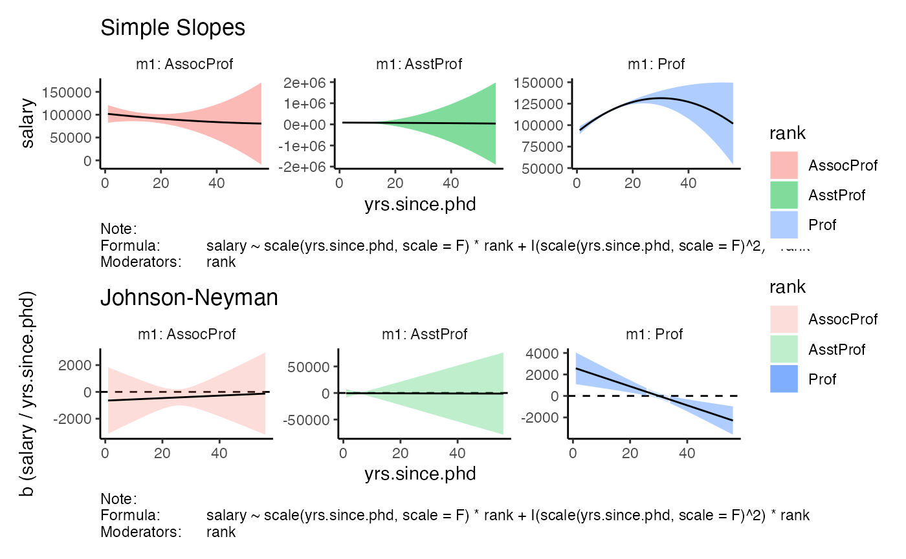

example.Rmd
library(rHelperPlotQuadratics)## rank discipline yrs.since.phd yrs.service sex salary
## 1 Prof B 19 18 Male 139750
## 2 Prof B 20 16 Male 173200
## 3 AsstProf B 4 3 Male 79750
## 4 Prof B 45 39 Male 115000
## 5 Prof B 40 41 Male 141500
## 6 AssocProf B 6 6 Male 97000
get_plot(model = model_fit,
x_var = 'yrs.since.phd',
m_vars = 'rank',
facet_wrap_opts = list(ncol = 3,
scales = 'free_y',
labeller = 'label_both'))##
## simple slopes:
## rank rh b se
## 1 AsstProf I(scale(yrs.since.phd, scale = F)^2) -6.531685 391.37140
## 2 AssocProf I(scale(yrs.since.phd, scale = F)^2) 4.684854 25.02869
## 3 Prof I(scale(yrs.since.phd, scale = F)^2) -44.147510 12.63665
## t p b_ci_95_ll b_ci_95_ul
## 1 -0.01668923 0.9866931000 -776.00570 762.94230
## 2 0.18717935 0.8516179000 -44.52397 53.89368
## 3 -3.49360890 0.0005314837 -68.99238 -19.30263
##
## johnson-neyman intervals:
## rank range
## 1 AsstProf no significant values
## 2 AssocProf no significant values
## 3 Prof [1, 25.75] U [34, 56]